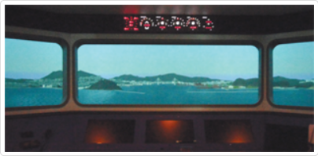
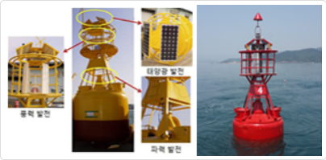
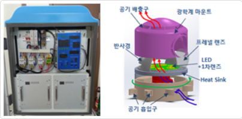
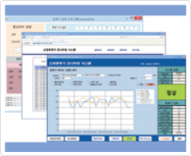

항로표지에 관한 전문 연구
항로표지 신기술 연구개발, IALA 기준 선도
우리 기술원은 국내 최고의 항로표지 분야 연구인력을 보유하고 전문가 브레인풀을 구성하여 기술연구소를 운영하고 있습니다. 이를 기반으로 IALA(국제항로표지협회) 기준을 충족하는 신기술 연구개발과 첨단 항로표지 정책과제 발굴연구를 수행하고 있습니다.
| 항로표지 시뮬레이터 기술개발 | 해역의 해양교통 특성 등을 종합적으로 고려한 시뮬레이션 환경을 제공함으로서 항로표지 설계, 배치계획 등에 대한 의사결정을 효과적으로 지원하는 시스템 개발 |
| 등부표용 복합전력생산시스템 실용화 연구 | 해상에서 태양광, 풍력, 파력발전을 이용한 등부표 하이브리드 전력생산시스템의 실용화 연구 |
| 육지초인용 LED대형등명기 개발 | 20~27NM까지 괄달거리 조정이 가능한 광도 가변형 육지초인용 LED 대형등명기 개발 |
| 소형등명기 통합제어시스템 개발 | 등명기 제어기능, 고효율충방전조절기 및 무선 원격감시 기능을 통합한 저전력 소형등명기용 통합시스템 개발 |

항로표지 시뮬레이터 기술개발

등부표용 복합전력생산시스템 실용화 연구

육지초인용 LED대형등명기 개발

소형등명기 통합제어시스템 개발